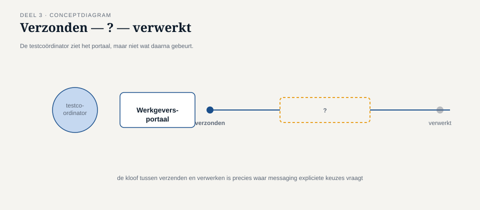

Deel 3 — Message Construction: command, event, document en request-reply
Reader · Ductus-cursus Enterprise Integration Patterns · niveau 1 (fundament) · deel 3 van 10
3.0 De vraag die na het herziene ontwerp overbleef
Het herziene ontwerp aan het eind van deel 2 loste de vermenging op — mutatiekanaal en mutatie-gebeurd-kanaal, keurig gescheiden. Maar toen Caspar het aan de testcoördinator van het Werkgeversportaal liet zien, kreeg hij een vraag terug die hij niet had zien aankomen: "Mooi, maar hoe laat ik straks in de interface aan de werkgever zien of zijn mutatie gelukt is? Ik kan toch niet drie kwartier lang 'wordt verwerkt' blijven tonen zonder ooit een update?"
Dat is geen implementatiedetail. Het is de vraag of het ontwerp uit deel 2 een compleet patroon vormt, of alleen de helft ervan. Een command message versturen is één ding; weten wat er met die opdracht gebeurd is, is een ander. Dit deel werkt drie dingen uit: hoe je de drie berichtstypen uit deel 2 concreet bouwt, hoe je met request-reply een antwoord terugkrijgt zonder terug te vallen op synchroon wachten, en waar de grens ligt tussen "nuttige asynchrone terugkoppeling" en "eigenlijk toch gewoon een blocking call, alleen trager".

3.1 Command messages opnieuw bekeken: wat erin moet
Een command message is meer dan "een opdracht in JSON". Om bruikbaar te zijn voor de ontvanger, en om later terugkoppeling mogelijk te maken, moet een command message drie dingen bevatten die niet vanzelfsprekend zijn als je alleen aan de payload denkt:
Een unieke bericht-ID, los van eventuele fachliche identifiers zoals een deelnemersnummer. Deze ID is nodig voor idempotentie (deel 7) en voor logging — als hetzelfde command twee keer met exact dezelfde inhoud binnenkomt (door een retry, zie deel 7), moet de ontvanger kunnen vaststellen of dit een nieuw verzoek is of een dubbele aflevering van hetzelfde verzoek.
Een reply-to adres, als er een antwoord wordt verwacht. Dit is een header-veld dat aangeeft: als je klaar bent, stuur het resultaat naar dít kanaal, niet naar een kanaal dat de ontvanger zelf moet raden of hardcoderen.
Een correlation identifier, zoals geïntroduceerd in deel 2, zodat het antwoord (op het reply-to-kanaal) terug te koppelen is aan deze specifieke aanvraag.
Zonder deze drie is een command message een opdracht die de ontvanger wel kan uitvoeren, maar waarvan de resultaten nergens gestructureerd terugkomen — precies het gat dat de testcoördinator signaleerde.
3.2 Het request-reply-patroon
Request-reply is de asynchrone tegenhanger van een synchrone aanroep-met-antwoord: de aanvrager stuurt een command (of, minder gebruikelijk, een document) op een verzoekkanaal, en ontvangt het antwoord op een apart antwoordkanaal — zonder dat de aanvrager blokkeert in afwachting daarvan.
Dat laatste woord, "blokkeert", is het hele verschil met synchroon wachten. Het patroon bestaat uit drie samenwerkende onderdelen:
Het verzoekkanaal, waarover het command wordt verstuurd — dit is precies het mutatiekanaal uit deel 2.
Het antwoordkanaal, aangewezen via het reply-to-veld. Dit kan een gedeeld kanaal zijn waarop alle antwoorden binnenkomen (en waarbij de correlatie-ID bepaalt wie welk antwoord oppikt), of een kanaal per aanvrager. Beide varianten hebben een plek: een gedeeld antwoordkanaal is eenvoudiger te beheren, een kanaal per aanvrager is eenvoudiger te beveiligen. Bij Meridiaan is voor het Werkgeversportaal gekozen voor een gedeeld antwoordkanaal per applicatie, omdat het aantal werkgevers te groot is om per werkgever een kanaal te onderhouden.
De correlatie, die bepaalt welk binnenkomend antwoord bij welke nog openstaande aanvraag hoort — het mechanisme uit 2.4, nu in actie.
Kernzin 3 van de cursus: request-reply is geen synchrone aanroep in een jasje — de aanvrager gaat na verzending gewoon door, en verwerkt het antwoord wanneer het komt, niet wanneer hij ernaar staat te wachten.

3.3 De valkuil: request-reply als vermomd blocking call
De meest voorkomende beginnersfout bij dit patroon is het bouwen van precies het verkeerde ding: de aanvrager verstuurt het command, en blokkeert vervolgens synchroon totdat het antwoord op het antwoordkanaal verschijnt — inclusief een time-out, exact zoals bij de oorspronkelijke REST-aanroep uit deel 1.
Dit lost niets op. Het voegt alleen twee kanalen en een correlatie-ID toe aan een ontwerp dat in de kern nog steeds "wachten op antwoord" is, met alle nadelen van deel 1 (signaal 1: onvoorspelbare verwerkingstijd) intact, plus de extra complexiteit van messaging erbovenop.
Wanneer is blokkerend wachten op een reply dan wél verdedigbaar? Als, en alleen als, de aanvrager werkelijk niets anders te doen heeft totdat het antwoord er is — bijvoorbeeld een achtergrondproces dat na een reeks stappen expliciet op resultaat A moet wachten voordat stap B zinvol is, en waarbij het geen enkele consequentie heeft dat dit achtergrondproces een tijdje "stilstaat". Bij een interactieve gebruiker, zoals de werkgever in het portaal, is dat vrijwel nooit het geval.
Het juiste antwoord voor het Werkgeversportaal is daarom niet "blokkeer tot het antwoord er is", maar: toon direct een ontvangstbevestiging ("mutatie ontvangen, referentie MRD-2026-08341"), sla de correlatie-ID lokaal op, en werk de status bij zodra het antwoordbericht binnenkomt — via een los mechanisme dat de gebruiker ofwel actief informeert (notificatie, e-mail) ofwel laat opvragen (statuspagina). Dit laatste, het opvragen van status, is zelf weer een klein request-reply-patroon: "wat is de status van referentie MRD-2026-08341?" is een command met een eigen, onmiddellijk antwoord (want de status zélf, ook "nog in behandeling", is meteen beschikbaar — alleen de uitkomst van de oorspronkelijke mutatie niet).

3.4 Document messages: wanneer geen opdracht en geen gebeurtenis volstaat
Niet elk asynchroon bericht is een opdracht of een feit. Soms is de enige bedoeling het overdragen van gegevens, zonder dat de zender iets voorschrijft en zonder dat het een op-zichzelf-staande gebeurtenis is. Het klassieke voorbeeld bij Meridiaan is de jaaropgave: eenmaal per jaar wordt voor elke deelnemer een volledig dossier samengesteld en doorgezet naar de communicatieafdeling, die er een document van maakt.
Een document message onderscheidt zich van een event message door de afwezigheid van een "dit is gebeurd"-connotatie: het dossier zelf is geen gebeurtenis, het is gewoon informatie die op dit moment wordt overgedragen omdat er een taak (het genereren van de jaaropgave) om vraagt. Het onderscheidt zich van een command message doordat er niets wordt opgedragen — de ontvanger bepaalt zelf, of via zijn eigen proces, wat er met de gegevens gebeurt.
Deze nuance is voor de meeste ontwerpen minder kritisch dan het command/event-onderscheid uit deel 2 — verwar een document zelden met een event, want de praktische gevolgen zijn kleiner. Toch is het onderscheid nuttig om scherp te houden: een document message hoeft geen reply-to en geen verwachting van een antwoord te bevatten, wat het ontwerp van het bijbehorende endpoint eenvoudiger maakt dan bij een command.
3.5 Terug naar de testcoördinator
Met request-reply, correlatie en de drie berichtstypen op hun plaats, kon Caspar de vraag van de testcoördinator volledig beantwoorden:
- Het Werkgeversportaal verstuurt een command message met bericht-ID, reply-to en correlatie-ID.
- KERN verwerkt en stuurt een antwoordbericht (zelf ook een soort command, namelijk "toon dit resultaat", of eenvoudiger: als document beschouwd — de cursus behandelt dit verder niet als apart type om de terminologie niet nodeloos uit te breiden) terug op het aangewezen antwoordkanaal, met dezelfde correlatie-ID.
- Ondertussen toont het portaal direct een ontvangstbevestiging, zonder te blokkeren.
- Bij binnenkomst van het antwoord wordt de lokaal opgeslagen status bijgewerkt, zichtbaar via een statuspagina die de gebruiker zelf kan raadplegen — zelf ook een (razendsnel) request-reply-patroon.
Dit is het eerste volledig sluitende asynchrone ontwerp van de cursus. Het bevat nog geen routing, geen transformatie en geen foutafhandeling voor het geval KERN helemaal niet reageert — dat komt in de volgende delen.
Samenvatting van deel 3
- Een bruikbaar command message bevat, naast de payload: een unieke bericht-ID, een reply-to-adres (indien een antwoord verwacht wordt), en een correlatie-ID.
- Request-reply is de asynchrone tegenhanger van een aanroep-met-antwoord: verzoekkanaal, antwoordkanaal, en correlatie die ze verbindt.
- De grootste valkuil is request-reply bouwen als vermomd blocking call — synchroon wachten op het antwoordkanaal lost niets op van wat deel 1 signaleerde.
- Het juiste patroon voor een interactieve gebruiker: directe ontvangstbevestiging, asynchrone statusbijwerking, optioneel een tweede, razendsnelle request-reply voor statusopvraging.
- Document messages dragen gegevens zonder opdracht en zonder gebeurtenis-connotatie; het onderscheid met event is minder kritisch dan command/event, maar wel nuttig voor een eenvoudiger endpoint-ontwerp.
Vooruitblik
Deel 4 opent de eerste patroonfamilie: routing. Nu berichten goed geconstrueerd zijn, is de volgende vraag hoe een bericht zijn weg vindt naar de juiste ontvanger — te beginnen met de content-based router en de message filter.